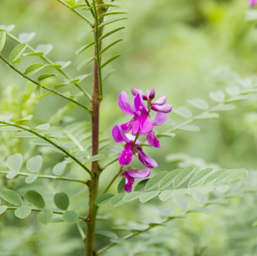
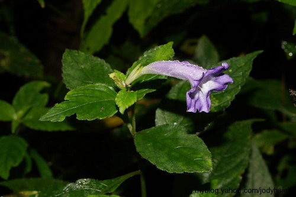
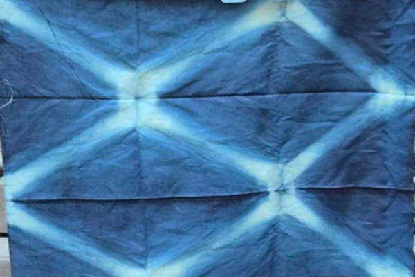
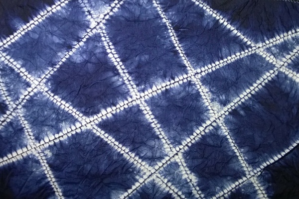
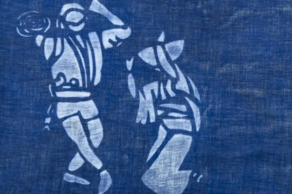

一分鐘秒懂！三峽藍染 400 年與湛藍魔法
從世界古文明到三峽老街，揭開藍草植物與「黃綠變深藍」的氧化還原化學奇蹟！
你知道藍染發源於古埃及嗎？你知道染缸裡的染液其實是黃綠色的嗎？
跟著虛擬代言人「小染」，一起探索穿越四百年的植物色彩魔法吧！
第一站：藍染環球航海圖（全球歷史演變）
從古文明發源到臺灣三峽，串連四千年的跨國界藍色工藝史
木乃伊包裹布與藍色黃金
考古學家在古埃及木乃伊包裹布與古印度河文明遺跡中，均發現世界上最古老的藍靛染織品。藍靛具有天然防腐、防蟲蛀與抗菌的特殊效果，因而在古文明中被視為極其珍貴的「藍色黃金」。
《荀子·勸學》：青出於藍
古籍《荀子·勸學》留下名震千古的名句：「青，取之於藍，而青於藍」。在古代，人們將染色用的藍草稱為「藍」，而經發酵提煉沉澱出的深邃藍色染料則稱為「青」，象徵學習與實踐讓境界更上層樓。
德島灰汁發酵與武士象徵
日本鎌倉時代發展至今，德島「阿波藍」成為日本代表色（Japan Blue）。使用蓼藍葉堆肥發酵製成「蒅（Sukumo）」，再以數月草木灰汁（灰汁發酵法）釀造，具止血防蟲之效，深受武士階層青睞。
大航海、清代盛況與當代永續轉型
✦ 荷治與明鄭時期：荷蘭人引進木藍作為主要外銷經濟作物；漢人移民渡海定居，奠定臺灣藍染農業之厚實基礎。
✦ 清領黃金鼎盛期：三峽山區背山面水、氣候濕潤多霧極適合「馬藍（大藍）」生長，加上三角湧溪清澈水質漂洗與淡水河航運便利，使三峽一躍成為全臺灣北部染業重鎮，老街染坊林立。
✦ 現代文化復育：2000 年起，「三峽染工坊」（三角湧文化協進會）致力推動老街技藝保存；現今結合 Z 世代 VTuber 虛擬代言人「小染」與 SDGs 11.4 永續城鄉，展現傳統工藝新潮流！
第二站：藍草家族大解密（馬藍 vs 木藍）
左右滑動滑塊，直觀比對三峽主力「馬藍」與大航海要角「木藍」


馬藍（大藍）— 三峽藍染核心主角
爵床科- 學名：Strobilanthes cusia
- 生長環境：喜陰濕涼爽、多霧多雨之山區（三峽低海拔山林）。
- 植物特徵：多年生草本，葉對生、具明顯鋸齒緣。
- 花期與採收：每年 12 月盛開淡紫色筒狀小花，一年可採收兩次。
木藍（小藍）— 歷史悠久的熱帶藍草
豆科- 學名：Indigofera tinctoria
- 生長環境：喜陽光充足、高溫乾燥之平原（臺灣南部與熱帶）。
- 植物特徵：亞灌木植物，奇數羽狀複葉、小葉對生。
- 歷史地位：大航海時代主要之跨國植物染料商品來源。
第三站：染缸秘辛！神奇的「黃綠變深藍」氧化還原
滑鼠懸停染缸各部位，查看發光微光說明與四要素解密！
1. 頂層發酵藍花 (Indigo Foam)
藍染缸表面浮現的細密泡沫稱為「藍花」，呈現深邃帶紫之靛藍色。藍花越細膩濃郁，代表染缸內的微生物生機旺盛，是染液處於健康發酵還原狀態的最直接標誌！
氧化魔法關鍵解密：布料在染缸內其實呈現亮黃綠色！一旦撈出缸接觸空氣，布料上的白靛分子在短短數秒內迅速吸收氧氣，氧化聚合成不溶於水的深藍色（靛藍），完成神乎其技的定色魔法！
第四站：經典防染工藝技法—五大花紋圖鑑
解密藍染千變萬化的留白工法：物理阻隔與化學褪色的極致美學
1. 扎染 (絞染 / Tie-Dye)
工藝原理：利用橡皮筋、麻繩將布料綑綁、抓皺、打結，使染液無法滲透被束縛處。
視覺效果：形成獨一無二的放射狀同心圓、流動水波紋與自然的漸層白邊。

2. 夾染 (Clamp-Dye)
工藝原理：將布料折疊後，使用對稱的木板、竹片或特製夾子緊緊夾固固定。
視覺效果：創造出極具幾何感、左右嚴格對稱且邊界俐落分明的條理圖騰。

3. 縫染 (Stitch-Dye)
工藝原理：以針線沿著設計圖案手縫於布料，再全力拉緊抽繩打結進行細密防染。
視覺效果：展現如水墨工筆畫般細緻繁複的花朵、葉脈與點線靈動圖騰。
4. 段染 (Gradation Dye)
工藝原理：分階段控制布料浸入染缸之深度與次數，調配不同區域吸收色素之時間。
視覺效果：呈現由極淺天青至深邃湛藍、層次豐富且過渡柔暢的優雅漸層感。

5. 拔染 (Discharge Printing)
工藝原理：先將布料完全浸染成均勻深藍，再以印花版將專用還原劑塗刷於局部使其褪色。
視覺效果：能在深藍布料上呈現線條極度繁複銳利的花鳥、文字與現代幾何圖形。
想知道你的靈魂對應哪一種防染花紋嗎？
只需回答 4 個情境問題，小染就能為你測出專屬本命圖騰，還能立即下載專屬 IG 限動分享卡！